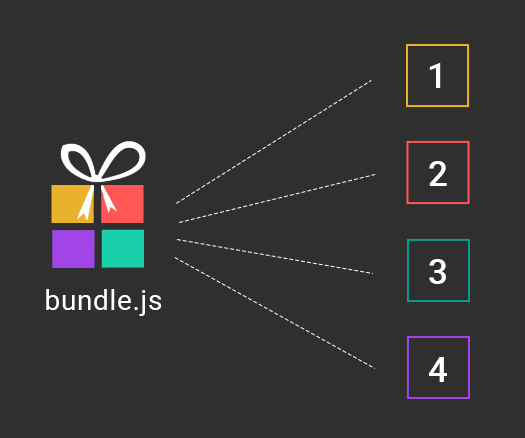

Performance
Factors
CDN, Server response time, Assets management, File formats, HTTP protocols, Third-party scripts, Gzip compression, Browser cache, Cache headers, Device hardware, Network conditions, Render blocking code, Critical path rendering, HTTP redirects, ...
Images
Images are the No.1 fat candiates
JPEG, PNG, WEBP
Image Fundamentals
Is the image transparent? then PNG is must
Is the image has less colors? PNG works better
Is the image not transparent & has more colors? go for JPEG
Compression is must for all images
Don't commit unoptimized image to git repo
Make sure optimization doesn't reduce image quality visually
Don't compress the compressed. Always compress original image
Recommendations
tinypng.com
webp format (with care)
Lazy loading
Auto image optimization in CMS
Javascript
Lack of understanding about a module
Third party side effects
Bundling
Ctrl+c, Ctrl+v
webpack-bundle-analyzer plugin

import-cost VScode plugin

Code Splitting (webpack)
Keep things in control
Developer tools network monitoring
Network & CPU throttling
Always run production build with NODE_ENV='production'
Its our responsibility to deliver performance